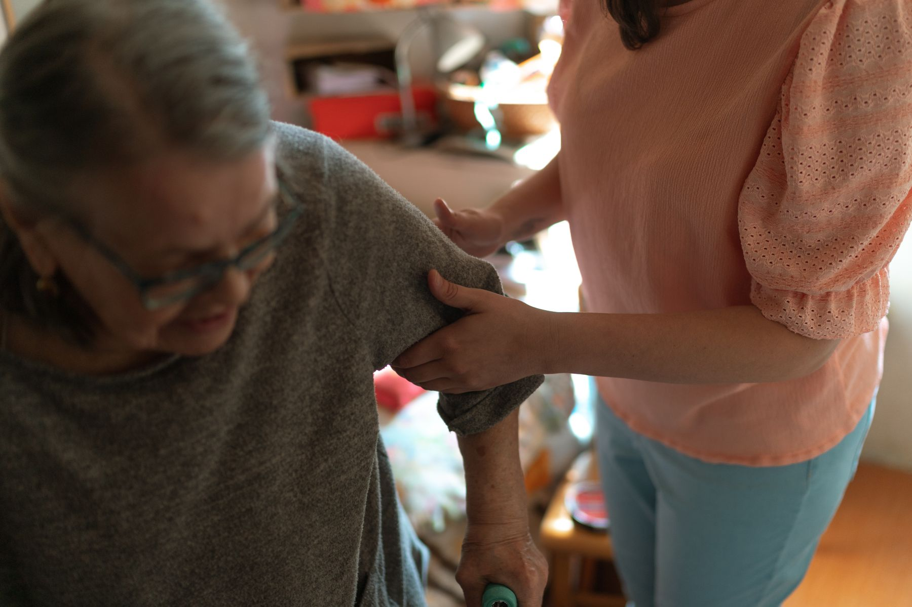

公式サイトで案内されている内容を、見つけやすく整理する構成です。

LIFE WITH DIGNITY / WEB DESIGN PROPOSAL
その人らしい毎日を、いっしょに。
地域にひらかれた支援を。
社会福祉法人太鷲会が公式サイトで発信している事業と地域への姿勢を、写真と動きで直感的に伝えるトップページ案です。
SCROLL
01 / ABOUT
社会福祉法人太鷲会の仕事を、
わかりやすく。
公式サイトで確認できた情報をもとに、初めて訪れる方が事業内容と連絡先へ迷わず進める構成を提案します。
掲載写真はすべて商用利用可能なイメージ素材です。実際の施設・設備・職員・利用者を撮影したものではありません。

02 / SERVICE
伝えたい情報に、
すぐ届く。
公式サイトで案内されている内容を、見つけやすく整理する構成です。
公式サイトで案内されている内容を、見つけやすく整理する構成です。

03 / INFORMATION
会社・法人案内
内容は2026年9月24日に公式サイトで確認した情報に基づいています。
- 名称
- 社会福祉法人太鷲会
- 業種
- 介護・福祉施設
- 住所
- 246-7800
- 電話
- 079-246-7800
- 公式サイト
- https://taishukairecruit.jp/company/introduction/
このページは社会福祉法人太鷲会様への非公式なデザイン提案です。送信機能は実装していません。写真はイメージです。